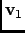
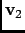
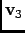
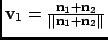
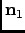
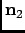
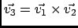
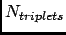

Next: Parameters
Up: Angular Correlation
Previous: Angular Correlation
Contents
Theory and implementation
The angular correlation analysis computes the autocorrelation of a set of vectors describing the extent of a molecule in three
orthogonal directions. This kind of analysis can be useful when trying to highlight the fact that a molecule is constrainted
in a given direction.
For a given triplet of non-colinear atoms g=(a1,a2,a3), one can derive an orthonormal
set of three vectors , ,  using the following scheme:
-

where  and  are respectively the normalized vectors along (a1,a2)
and (a1,a3) directions.
- is defined as the clockwise normal vector orthogonal to that belongs to the plane
defined by a1, a2 and a3 atoms
-

Thus, one can define the following autocorrelation functions for the vectors , and
defined on triplet t:
And the angular correlation averaged over all triplets is:
where  is the number of selected triplets.
Next: Parameters
Up: Angular Correlation
Previous: Angular Correlation
Contents
pellegrini eric
2009-10-06